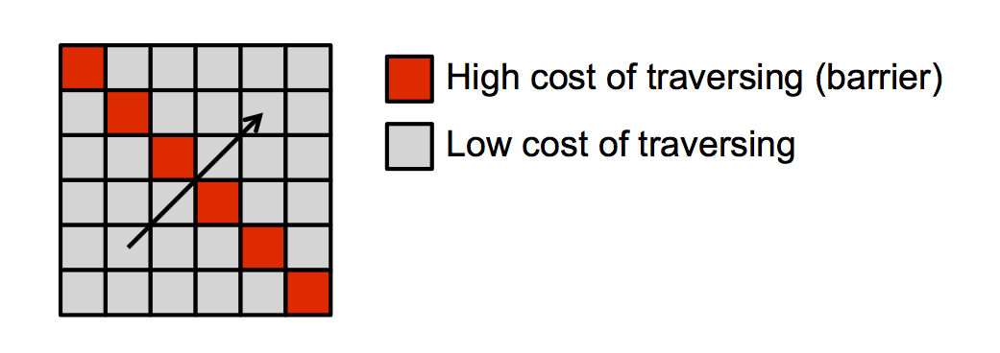

GEOG*3480
GIS and Spatial Analysis
Least-cost Pathway Analysis
John Lindsay
Fall 2015
Distance and Cost
- We're not always interested in the straight-line distance between spatial objects
- There are times (and types of spatial problems) that require the estimation of
cost-weighted distances, i.e. calculating the 'cost' of moving across the landscape
Distance and Cost
- Cost = money, time, energy, fuel, suffering, resistance or other parameters
- Very often we want to minimize costs
- Euclidean distance has the limitation of assuming that the cost of crossing distances
in any cell on the way to a source cell is the same as the cost of crossing distances in
any other cell
Least-cost pathway analysis (LCPA)
- LCPA is a way of finding an optimum, or set of optimum, pathways across a landscape
with a non-uniform spatial distribution of resistance to travel
- Many GIS offer tools for performing LCPA because it is so widely used...it's a
common spatial problem
- Measures the effective distance rather than the Euclidean distance
- Type of spatial analysis based on the raster model
LCPA Steps
- Calculate the cost of traversing through each grid cell...the Cost Surface
- Specify a Source Cell(s) and/or Target Cell(s)
- Perform Cost Accumulation analysis
- Identify the optimum Least-Cost Pathway(s)
The Cost Surface
- We can create a cost surface to account for the factors affecting cost
- Each grid cell contains a number that indicates the cost of going through a
unit of distance in that cell
- If it is three times harder to go through the forest as it is to go through
the pasture, we might assign values of 1 to the pasture cells and 3 to the
forest cells.
The Cost Surface
Physical barriers (e.g. streams) can be represented in the cost surface by
exceedingly high costs. Consider the following maze example:
The Cost Surface
Care must be taken when adding linear features (roads, streams, etc.) to
the cost surface. Diagonal raster connectivity may allow the least-cost path to incorrectly pass
through an area with high resistance.

Cost Accumulation
The accumulated cost found in the output grid is the sum of the products
formed by:
- the distance across each cell, and;
- the value of each cell, i.e. the price per unit distance for going through, which will
depend on the grid resolution.
Cost Accumulation
- Cost accumulation calculates the SPREAD distance, with a friction (cost)
determined by the cost surface.
- The accumulation procedure works outward from specified source cells.
- Each cell in the grid is then assigned the minimum cost-distance connecting
it to the ‘nearest’ source cell.
- Effectively creates a continuous cost accumulation surface.
The Least-Cost Pathway
- Least cost pathways can be estimated by using a D8 flow routing algorithm on the cost
accumulation surface in much the same way that we've seen flow algorithms used to trace
flowpaths over the surface defined by a DEM
- The source cells will be the lowest points in the cost accumulation surface
- You can trace the pathway of steepest descent from any target cell(s) to the nearest
source cell, working backwards
Let's consider an example...
- Two major highways travel parallel through a mountainous environment. When there are
traffic accidents, large sections of the highway must be closed. Unfortunately because no
secondary road connects either highway during the dangerous section of the highway, detours
are impossible during times of closure. This has become a serious problem of the area and as
a result the authorities are considering creating a new secondary road to join the main
highways.
- What would be the best route for this new highway?
Things to consider that affect the cost
- The raster grid resolution is 90 m
- [note all costs are made up for the example]
- Privately owned land is prohibitively expensive to acquire
(set cost to $100,000 / 90 m, i.e. an effective barrier)
- Bridges over lakes are not feasible (within our budget)
Things to consider that affect the cost
- There is a cost associated with crossing rivers and rivers.
- Small rivers can be culverted ($500 / 90 m)
- Small bridges cost between $5000 / 90 m and �$10,000 / 90 m
- Large bridges are prohibitively expensive (set to $1,000,000 / 90 m)
- We can use the Stream Order tool to distinguish small, medium and large
streams.
- Streams, being single cell wide lines, need to be represented in the cost surface
as 'fat' networks and we can use a 3 x 3 Maximum filter to do this.
Things to consider that affect the cost
- We cannot build a road through wetlands due to environmental reasons
(set to $1,000,000 / 90 m)
- It costs more to build roads on steeper slopes because of the need to cut
bedrock to grade the slope
- 0°-5° $1,000 / 90 m
- 5°-10° $2,000 / 90 m
- 10°-15° $3,000 / 90 m
- >15° $100,000 / 90 m (major grading required)
- Slope can be measured from the DEM using the Slope tool.
Once we've combined each cost factor into a single cost surface,
we can use Whitebox GAT's Cost Accumulation tool.
Here is the cost surface and cost accumulation surface for our example:
Now we use the back-link grid output from the cost accumulation as
an input for Whitebox's Least-Cost Pathway tool. For our example, we would
like the secondary road to connect to Road 2 (i.e. the eastern road) at Old Town. A raster of
Old Town's location is therefore used as the destination input.
Here is the back-link raster and final least-cost pathway connecting Old Town
on Road 2 to Road 1: